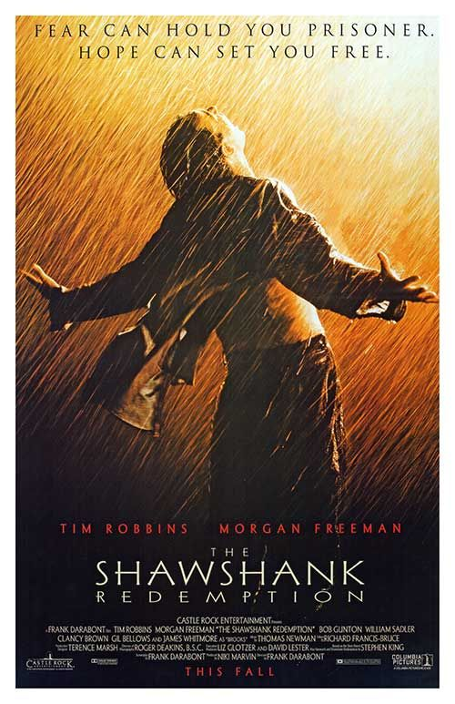

The Shawshank Redemption
Andy Dufresne, a successful banker, is arrested for the murders of his wife and her lover, and is sentenced to life imprisonment at the Shawshank prison. He becomes the most unconventional prisoner.
Initial release: 22 September 1994 (Beverly Hills)
Director: Frank Darabont
Story by: Stephen King
Awards: Japan Academy Prize for Outstanding Foreign Language Film
Screenplay: Frank Darabont, Stephen King
The Godfather

Don Vito Corleone, head of a mafia family, decides to hand over his empire to his youngest son Michael. However, his decision unintentionally puts the lives of his loved ones in grave danger.
Initial release: 14 March 1972 (New York)
Director: Francis Ford Coppola
Produced by: Albert S. Ruddy
Production companies: Paramount Pictures; Alfran Productions
Adapted from: The Godfather
The Dark Knight

After Gordon, Dent and Batman begin an assault on Gotham's organised crime, the mobs hire the Joker, a psychopathic criminal mastermind who offers to kill Batman and bring the city to its knees.
Initial release: 18 July 2008(India)
Director: Christopher Nolan
Story by: Christopher Nolan; David S. Goyer
Award: Academy Award for Best Supporting Actor